Scaling Laws for Agent Harnesses via Effective Feedback Compute
论文提出 Effective Feedback Compute (EFC)：agent harness 的 test-time scaling 不应只按 token、tool call 或成本计量，而应按“有效、可靠、非冗余、会被后续决策保留”的反馈量计量，并用任务需求 $D_{\mathrm{task}}$ 做归一化。
1. 研究动机
大模型从 single-turn prediction 走向 interactive problem solving 后，性能越来越由外部 agent harness 决定：它负责工具调用、环境反馈、验证、中间状态保存、错误修复和停止策略。传统 test-time scaling 常用 raw tokens、tool calls、operations、wall time 或 cost 当作横轴，但这些量无法区分“有用反馈”和“重复、噪声、无效、被遗忘的交互”。
本文的核心问题是：对于 closed-loop agent harness，什么标量最能解释额外 test-time compute 何时会变成更高成功率？作者的回答是 EFC。它把 harness scaling 分解成两件事：第一，harness efficiency $\eta$ 表示 raw budget 转成有效反馈的效率；第二，$EFC/D_{\mathrm{task}}$ 表示反馈是否足够覆盖任务需求。
每个反馈事件只有同时具备 informativeness、validity、non-redundant relevance、memory update 才获得高分。
Oracle-EFC 只能在 synthetic hidden-state 可见时使用；Estimated-EFC 和 NRS-EFC 用 trace-time features 近似。
覆盖 synthetic controllable tasks、HumanEval-like executable tasks、真实 benchmark traces、held-out splits 与 prospective batch。
2. 数学表示、建模与算法流程
2.1 Closed-loop agent harness 表示
对任务分布 $\mathcal{T}$，任务实例 $x \sim \mathcal{T}$ 包含初始状态、指令、环境接口和 evaluation function。base model $m$ 与 harness $h$ 生成轨迹：
其中 $s_t$ 是 step $t$ 前的 agent state，$a_t$ 是 model action 或 tool call，$o_t$ 是 observation，$u_t$ 是对 state、memory、plan 或 candidate solution 的更新。最终答案 $\hat{y}$ 由 checker $g_x(\hat{y}) \in \{0,1\}$ 评估：
2.2 EFC 的事件级定义
论文把轨迹拆成 feedback events $E(\tau)=\{e_t\}_{t=1}^{T_{\mathrm{fb}}}$。每个 event 有四个 $[0,1]$ 因子：$I_t$ 表示信息量，$V_t$ 表示可靠性，$R_t$ 表示对当前 subgoal 的非冗余相关性，$M_t$ 表示是否进入后续 plan/state/memory。
作者在所有实验中使用 $\kappa=10$。乘积形式很关键：任一因子接近 0 都会让事件贡献塌缩，因此“有观察但无效”“有效但重复”“有用但未保留”的交互不会被高估。
| 符号 | 含义 | 论文中的用途 |
|---|---|---|
| $C_{\mathrm{raw}}$ | raw cost，综合 token、tool call、operation、runtime 等。 | 作为 raw-compute baseline，也用于 $\eta=EFC/C_{\mathrm{raw}}$。 |
| $D_{\mathrm{task}}$ | 任务需求尺度。 | 将不同任务族的 EFC 放到可比较的尺度上。 |
| $\eta$ | harness efficiency。 | 衡量同样 raw budget 下 harness 把预算转成有效反馈的能力。 |
| $\widehat{EFC}$ | Estimated-EFC。 | 不使用最终 success label，只从 trace-time features 估计 EFC。 |
| NRS-EFC | non-redundant stable EFC。 | 真实 traces 中过滤重复失败、不稳定 observation 和无持久进展的反馈。 |
| $E(z)$ | 基于标量 $z$ 的 failure rate。 | 所有标量都放进同一个 power-law failure model 比较。 |
2.3 Estimated-EFC 与 NRS-EFC
合成任务中可以用 hidden state 计算 Oracle-EFC；真实任务无法观察 latent progress，因此作者用 trace-observable features 估计：
这里 $c_t$ 是 checker 是否触发，$h_t$ 是 checker scope，$z_t$ 是 tool result 是否被后续引用，$p_t$ 是 plan 是否改变，$m_t$ 是 memory retention，$a_t$ 是 repeated-error avoidance，$q_t$ 是 observation consistency，$\Delta_t$ 是 subgoal progress，$\rho_t$ 是 trace position。最终 success label 只用于评估 fit，不作为 estimator 输入。
在 real benchmark traces 中，作者又引入 status-aware gates。稳定版本为：
$Q_t$ 来自执行状态质量，例如 passed、assertion error、runtime error、timeout、API error；$G_t$ 和 $\Lambda_t$ 对是否产生进展、是否陷入重复 repair loop 做门控；$A_t$ 是 attempt index。
2.4 任务需求归一化与 scaling law
同样的 EFC 在简单任务和复杂任务中含义不同。论文用任务需求尺度：
$L$ 是最小 reasoning/action steps，$H_{\mathrm{tool}}$ 是 tool-selection ambiguity，$S_{\mathrm{state}}$ 是 state tracking demand，$N_{\mathrm{obs}}$ 是 observation noise，$V_{\mathrm{oracle}}$ 是 verifier-signal visibility。注意 $V_{\mathrm{oracle}}$ 不是给 agent 泄漏答案，而是描述任务层面可用验证信号的覆盖度。
所有 scalar predictors 都放入相同的 power-law failure model，用 $R^2$ 和 MAE 比较。SAS 是多变量 system-level baseline，因此作者直接评估其 predicted failure rate。
2.5 方法流水线
3. 实验设计与复现细节
3.1 任务层与 benchmark
| 层级 | 任务/数据 | 为什么需要这一层 | 可观测信号 |
|---|---|---|---|
| Synthetic controllable tasks | Needle Lookup, State Tracking, Rule Filter | 可观察 hidden state，可直接计算 Oracle-EFC，并控制 $D_{\mathrm{task}}$。 | latent progress、deterministic checks、task demand factors。 |
| Semi-realistic executable tasks | HumanEval-like function completion、小型 repair/analysis/tool-use tasks | 引入真实代码执行错误、unit tests 和 repair behavior，检验 Estimated-EFC 是否保持预测力。 | syntax/runtime/test failures、partial correctness、tool result references。 |
| Real benchmark subsets | HumanEval, Terminal-Bench 2.0, SWE-bench Verified | 测试 heterogeneous real traces 上 raw compute 与 NRS-EFC 的差距。 | 自动 final evaluator、一致 trace schema、命令输出、test results、tool responses。 |
3.2 Harness families
作者比较 H0-H6 七类 harness。它们不是简单的 raw compute 单调递增，而是刻意拆开预算、路由、验证、记忆、噪声和 closed-loop depth。
| Harness | 机制 | 在 EFC 框架中的作用 |
|---|---|---|
| H0 Direct Answer | 单次生成，无显式工具反馈、verification、repair 或 memory。 | 低反馈质量的 base reference。 |
| H1 Checklist Verify | 增加轻量 checklist 或 self-check。 | 隔离弱 verification 的收益。 |
| H2 Routed Tools | 按当前 state/subgoal 路由工具或观察。 | 提高 relevance 与 informativeness，但 memory/repair 较弱。 |
| H3 Stateful Memory | 保留 verified facts、failed attempts、constraints。 | 提高 $M_t$，减少重复错误。 |
| H4 High Budget Noisy | 高预算但弱 routing/verification/memory，高噪声与 state pressure。 | raw-budget negative control。 |
| H5 Closed Loop | routing、verification、structured memory 结合 iterative loop。 | 标准闭环，高 raw-to-EFC conversion。 |
| H6 Deep Closed Loop | 更深 interaction depth，更强反馈机制。 | 测试高效率 harness 上继续增加闭环深度是否有效。 |
3.3 Baselines、指标与 split
Raw Tokens、Tool calls、Wall time、Operations、Raw cost，以及多变量 agent-system scaling baseline SAS。
所有 run-level quantities 先按实验 group 聚合，再报告 $R^2$ 与 MAE。负 $R^2$ 表示比预测平均 failure rate 更差。
task family、harness variant、model、combined configuration，并额外做 prospective real-trace batch。
正文列出 DeepSeek-V4-Flash、gpt-5.4-nano、Claude-Haiku-4.5。论文未给出模型 API 参数、prompt 原文和完整预算表，需人工向作者代码/补充材料核对。
4. 实验结果与核心结论
4.1 Controlled scaling：EFC 比 raw compute 更像 scaling coordinate
在 synthetic controllable tasks 中，raw tokens 和 tool calls 只能解释有限变异，SAS 已经很强，但 EFC 与 $D_{\mathrm{task}}$ 归一化继续显著提升。最强结果是 Oracle-EFC/$D_{\mathrm{task}}$ 达到 $R^2=0.99$、MAE 0.02。
| 实验/设置 | Raw compute 结果 | 反馈类坐标结果 | 结论 |
|---|---|---|---|
| Figure 1 controlled scaling | Raw tokens $R^2=0.33$，tool calls $R^2=0.42$，raw cost $R^2=0.38$。 | SAS $R^2=0.88$；Oracle-EFC 与 Estimated-EFC 均为 $0.94$；Oracle-EFC/$D_{\mathrm{task}}$ 为 $0.99$。 | 绝对预算不是主坐标，任务需求归一化后的有效反馈给出最干净 curve collapse。 |
| Figure 2 matched-budget intervention | Raw cost delta 为 $0.000\%$，tool-call delta 为 $0.000$。 | 高反馈质量把 success 从 0.27 提到 0.90，paired gain 0.635。 | 同等预算下质量改变结果，排除“只是花更多计算”的解释。 |
| Figure 3 trace-time estimation | Raw tokens 到 tool calls 的 held-out $R^2$ 为 0.44 到 0.68；SAS 为 0.86。 | Estimated-EFC/$D_{\mathrm{task}}$ 为 0.93，Oracle-EFC/$D_{\mathrm{task}}$ 为 0.95。 | Estimator 不只是 outcome diagnostic，trace-time signal 已接近 oracle 坐标。 |
| Figure 4 executable code tasks | Tool calls 因为常触发 tests，达到 $R^2=0.94$；raw tokens 为 0.78。 | Estimated-EFC/$D_{\mathrm{task}}$ 为 0.97，oracle variants 为 0.99。 | 工具调用有效是因为它带来可用、被利用的测试反馈，不是计数本身。 |
4.2 分解机制：harness efficiency 与 task demand
Figure 5-8 把 EFC 的解释力拆成两个机制：routing、verification、memory、observation quality 控制 raw-to-EFC conversion；任务长度、tool entropy、state pressure、observation noise、verification coverage 决定需要多少反馈才足够。
| 图 | 关键数字 | 解释 |
|---|---|---|
| Figure 5 | Router quality 对 $\eta$ 的 high-minus-low effect 为 $+0.28$，verifier strength $+0.22$，memory fidelity $+0.20$；observation noise 为 $-0.17$。 | 最有价值的 harness 改动是提升反馈选择、可靠性与保留，而不是盲目增加预算。 |
| Figure 6 | Across module settings，success 与 mean $\eta$ 的 $R^2=0.97$，与 raw cost 的 $R^2=0.01$。 | 模块收益通过 $\eta$ 中介，而不是 raw cost 中介。 |
| Figure 7 | Raw Oracle-EFC $R^2=0.90$；Oracle-EFC/$D_{\mathrm{task}}$ hand 和 fit 均为 $0.96$。 | 跨 Needle Lookup、Rule Filter、State Tracking 时，绝对 EFC 仍有任务族 scale mismatch。 |
| Figure 8 | Mixed held-out 中 raw baselines $R^2=-0.42$，SAS $0.10$，NRS-EFC $0.70$，fitted NRS-EFC/$D_{\mathrm{task}}$ $0.83$。 | 异构任务需要校准 $D_{\mathrm{task}}$ 权重，hand-designed denominator 不一定最优。 |
4.3 Held-out 与 prospective validation
Figure 9-11 是最能支撑论文主张的外推实验：在 unseen task/harness/model/combo 上，task-demand-normalized EFC 保持较低 MAE；在 mixed real traces 中 raw compute 近乎失效；在 prospective batch 上，预先指定的 NRS-EFC/$D_{\mathrm{task}}$ 仍最好。
| 验证 | 主要发现 | 我的解读 |
|---|---|---|
| Held-out configurations | task、harness、model、combo split 上，task-demand-normalized EFC 组的 MAE 最低。 | 不是只在 pooled correlation 上好看，而是能预测未见配置的 absolute success。 |
| Mixed real traces | NRS-EFC/$D_{\mathrm{task}}$ $R^2=0.92$，NRS-EFC $0.89$，SAS $0.43$；raw compute baselines 为负或接近 0。 | 真实 traces 中必须过滤重复/不稳定反馈，slice-specific $\eta$ 说明没有全局最优 harness。 |
| Prospective holdout | NRS-EFC/$D_{\mathrm{task}}$ held-out $R^2=0.85$，NRS-EFC $0.77$，SAS $0.26$，raw baselines 为负。 | 对 post hoc metric tuning 的担忧有所缓解，但仍需更大规模、公开 trace 数据复验。 |
5. Figure / Table 导航
自动图像抽取未能切出 PDF 内嵌图，因此这里使用 PDF page render 后的本地 crop。每张图均来自构建目录中的 `assets/pages/page_XXX.png`，crop 需要人工核对边界，但数值解释已与正文文本交叉检查。
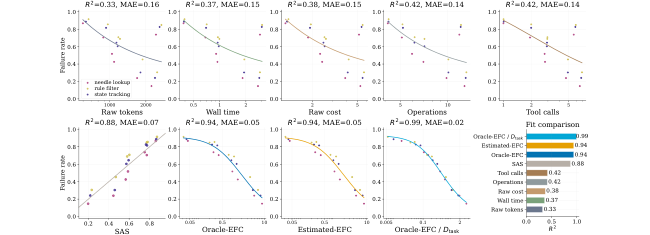
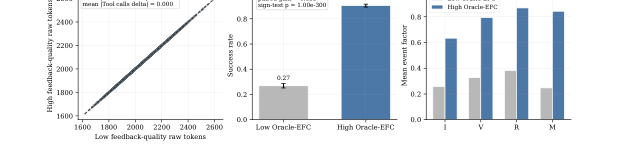
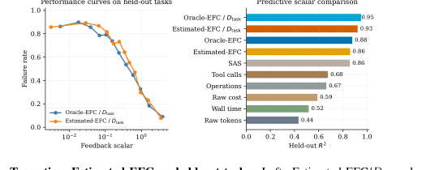
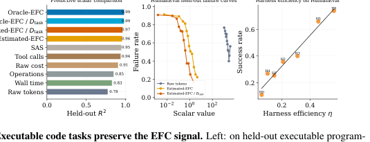
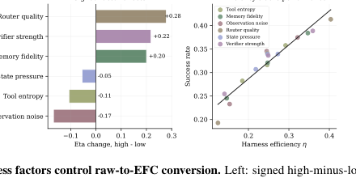
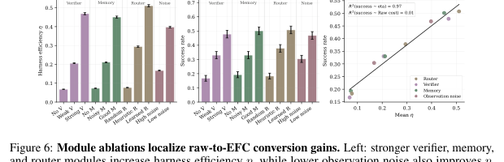
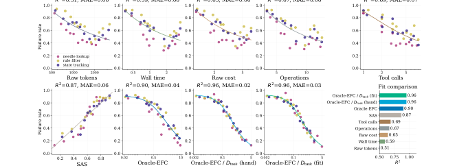
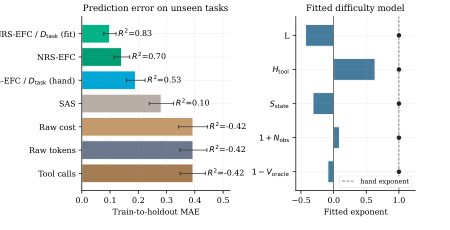
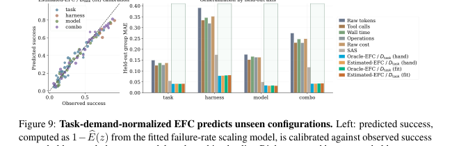
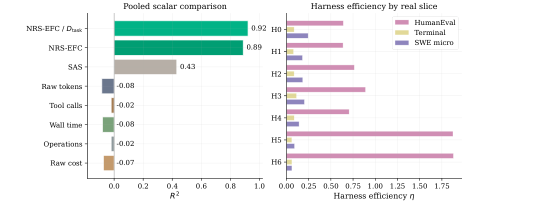
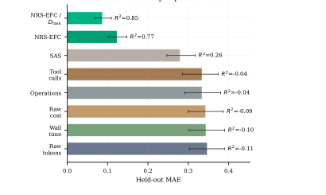
6. 复现清单
论文给出了公式、任务层、harness roles、logging schema 和主要对比，但缺少完整代码与 prompts。因此这里区分“可直接从论文恢复”和“必须向作者实现/补充材料核对”的部分。
- EFC、Estimated-EFC、stable/NRS-EFC、$D_{\mathrm{task}}$ 和 power-law failure model 的数学形式。
- 三层任务结构：synthetic controllable、semi-realistic executable、real benchmark subsets。
- H0-H6 的机制定义与停止规则。
- 主要 comparison metrics：$R^2$、MAE、held-out prediction。
- Exact prompts、tool interface、memory format、routing policy、checker implementation。
- Budget sweep grid、token/tool/runtime limits、replicate count、random seeds。
- Estimated-EFC estimator 的训练数据、优化器、正则化、feature preprocessing。
- 真实 benchmark subset 列表、过滤后的 task IDs、prospective batch 构成。
建议复现步骤
- 先实现合成任务三族，显式记录 latent state、candidate set、tool ambiguity、noise、verifier coverage，并计算 Oracle-EFC。
- 实现统一 trace schema：每个 event 至少记录 action type、observation type、checker status、tool name、memory update、是否引用过去 observation、attempt index。
- 在 synthetic calibration split 上拟合 $\widehat{EFC}_t$，确保 final success label 不进入 event-level estimator。
- 复现 Figure 1-3 的 controlled/held-out curves，再迁移到 HumanEval-like executable tasks。
- 最后进入 real benchmark subsets，并优先验证 Figure 10/11 中 raw compute 为负或接近 0、NRS-EFC 显著更强这一方向性结论。
7. Reviewer Critique
论文抓住了 agent harness scaling 中 raw budget 与 useful feedback 的核心混淆，并用 matched-budget intervention、held-out splits、prospective holdout 降低了纯相关分析的说服力问题。
EFC estimator 与 $D_{\mathrm{task}}$ 都需要人工设计和校准。若 trace schema、checker coverage 或任务过滤改变，指标可能失去可迁移性。
PDF 没有代码链接，也没有完整 prompts、task IDs、budget grids、estimator hyperparameters。作为 scaling-law 论文，这会影响独立复验。
更尖锐的审稿意见
- Metric circularity 风险：Estimated-EFC 的 features 包含 checker fired、plan update、subgoal progress 等高层 proxy，这些本来就接近成功机制。论文强调不使用 final success label，但仍需要证明 estimator 不只是把人类设计的成功相关特征重新加权。
- $D_{\mathrm{task}}$ 的可移植性：Figure 8 已显示 hand-designed denominator 在 mixed holdout 反而弱于 raw NRS-EFC。实际使用中，任务需求建模可能是最难迁移的部分。
- Harness family 抽象较粗：H0-H6 是机制角色而非公开实现。真实 agent 系统中的 planner、memory、retriever、tool router、verifier 组合更多，$\eta$ 可能高度依赖工程细节。
- 真实 benchmark 覆盖有限：HumanEval、Terminal、SWE 都是可自动验证任务。open-ended research、web agents、long-horizon multi-agent collaboration 是否也服从 NRS-EFC，需要额外证据。
- 缺少成本优化实验：既然 EFC 可做 scaling coordinate，下一步自然是 adaptive budget allocation：按 $\widehat{EFC}/C_{\mathrm{raw}}$ 动态停止或重路由。论文主要做解释，未充分展示控制策略收益。
8. 对我的研究方向的启发
不要把 tool-call count 当作能力本身。工具必须产生可验证、可复用、非重复的信息，并显式进入 memory/plan，才算真正扩展了 agent。
EFC 可作为 replay 选择或 curriculum 信号：优先保留高 $I_tV_tR_tM_t$ 的反馈片段，而不是保留所有失败轨迹。
多样性不应只按 action diversity 衡量，还应看反馈是否覆盖不同 subgoal、是否减少 uncertainty、是否避免重复错误。
benchmark report 可以加入 $\eta=\widehat{EFC}/C_{\mathrm{raw}}$ 与 $\widehat{EFC}/D_{\mathrm{task}}$，把“更贵”和“更会用反馈”拆开。
可以立即借鉴的实验
- Matched-budget feedback intervention：固定 tokens/tool calls/runtime，只改变 verifier quality、memory retention 或 observation noise，看成功率是否变化。
- Failure replay scoring：把失败轨迹按 NRS-EFC 分桶，检查高 NRS-EFC 失败是否集中在 task demand 不足、verifier coverage 不足或 final synthesis 错误。
- Slice-specific $\eta$：不要全局比较 harness；按任务 slice 画 $\eta$，找出 router/verification/memory 在不同环境中的最优组合。